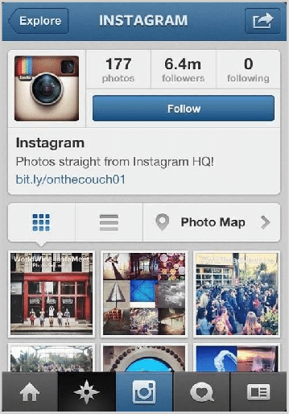
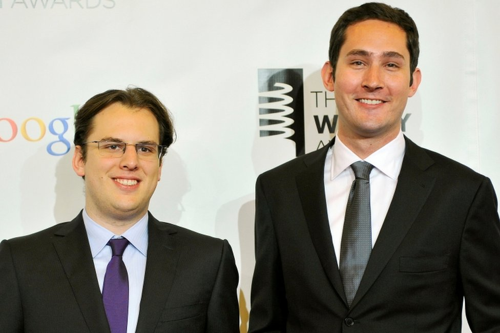
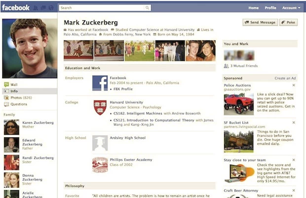
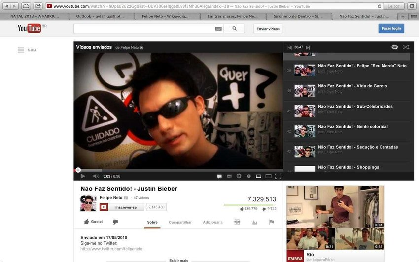
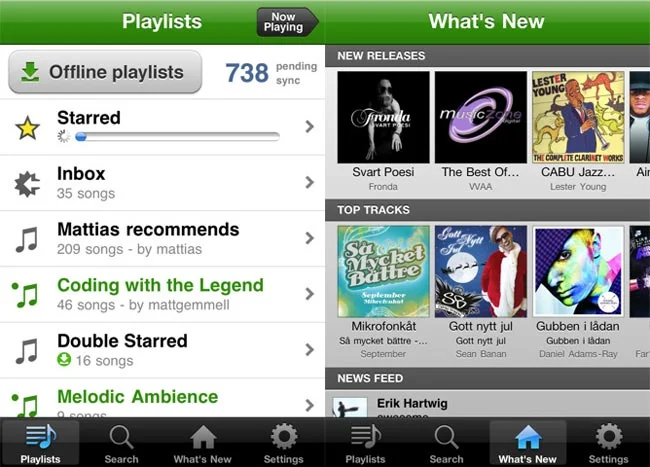
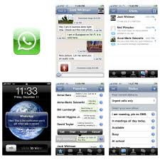

📋 Resumo
Se 2007 havia inaugurado a era dos smartphones e iniciado a transição da web para o bolso, 2010 é o ano em que a mobilidade deixa de ser novidade e se torna padrão. As empresas começam a redesenhar seus serviços inteiros para uma experiência móvel; o comportamento dos usuários muda radicalmente; e novas plataformas são criadas do zero já pensando em telas pequenas, fotos rápidas, vídeos curtos e interações constantes.
📚 Detalhes
A internet de 2010 não é mais apenas uma rede de páginas, blogs e fóruns — ela se transforma em um ecossistema social vivo e pulsante que passa a organizar memórias, trabalho, lazer, entretenimento, relacionamentos, produção cultural, política, consumo e identidade. É nesse contexto que surge um dos serviços mais influentes da década: o Instagram, lançado oficialmente em outubro de 2010. Criado por Kevin Systrom e Mike Krieger, o Instagram nasce como um aplicativo exclusivo para iPhone que responde exatamente às necessidades do novo mundo móvel: tirar fotos rápidas, aplicar filtros que compensavam a baixa qualidade das câmeras da época e publicar instantaneamente. O aplicativo sintetizava a estética emergente da vida digital: momentos cotidianos, cores vibrantes, imagens quadradas, espontaneidade calculada e uma cultura de compartilhamento visual que seria ampliada pelo uso de hashtags — mecanismo importado do Twitter, mas transformado em ferramenta de descoberta global.


A ascensão do Instagram revela uma mudança cultural profunda: 2010 marca a transição da internet baseada em texto para a internet baseada em imagens. Se a primeira década da Web 2.0 foi dominada por blogs e posts escritos, a segunda década seria dominada por fotografia, vídeo e cultura visual. O Instagram não inventou a fotografia digital, mas deu a ela um sentido social imediato, inaugurando a estética do “visual everyday”, que moldaria moda, culinária, turismo, comportamento e até padrões de beleza.
Além disso, 2010 destaca a consolidação do Facebook como força global. O site ultrapassa a marca de 500 milhões de usuários e se torna a maior rede social do planeta, superando Orkut (ainda dominante no Brasil), MySpace e outras plataformas que perderiam relevância. É também o ano em que o filme The Social Network é lançado, dramatizando a origem conturbada da plataforma e reforçando a percepção cultural de que a internet havia produzido seus próprios mitos fundadores — e seus primeiros bilionários digitais. O Facebook torna-se não apenas um site, mas um fenômeno social e político. Começa a dominar interações cotidianas, reunir dados em escala sem precedentes e moldar relações pessoais.

Ao mesmo tempo, o Twitter se estabelece como ferramenta de comunicação política, jornalística e cultural. Em 2010, o microblogging começa a ser usado em protestos, mobilizações e cobertura ao vivo de eventos. É o ano em que as redes sociais finalmente ultrapassam a mídia tradicional como fonte primária de informação em vários contextos, fenômeno que se intensificaria na Primavera Árabe (2011).
Outro fenômeno importante de 2010 é a consolidação do YouTube como plataforma central de entretenimento, superando o modelo de televisão tradicional para milhões de jovens. É o início da era dos creators, influenciadores e youtubers profissionais, apoiada pela expansão da monetização por meio do Adsense. O algoritmo do YouTube começa a priorizar tempo de visualização, alterando hábitos de consumo e incentivando vídeos mais longos e narrativos. É nesse período que começam a surgir formatos como “vlogs diários”, gameplays, tutoriais de maquiagem, vídeos de opinião e canais educativos, muitos dos quais se tornariam gigantes na década seguinte.

Mas talvez o movimento mais decisivo de 2010 para a economia digital tenha sido a ascensão do streaming como modelo dominante de mídia. Embora a Netflix tenha adotado o streaming em 2007, é em 2010 que ela se torna internacional, expandindo seu serviço para países como Canadá e iniciando o planejamento global. Isso marca o momento em que o streaming deixa de ser uma curiosidade tecnológica e começa a ameaçar seriamente a indústria do cinema, da televisão e do home video. O streaming, em 2010, representa o início da desmaterialização total do consumo cultural: filmes, séries e música deixam de depender de suportes físicos e passam a existir como dados em nuvem.
A música vive um processo paralelo. O Spotify, lançado na Europa em 2008, cresce rapidamente e começa a demonstrar que a era dos downloads — dominada por iTunes e pirataria na década de 2000 — estava chegando ao fim. A lógica muda: o usuário deixa de “possuir” arquivos e passa a “acessar” catálogos. Esse modelo de assinatura transformaria toda a indústria musical e criaria novas dinâmicas de mercado, playlists algorítmicas e artistas surgindo diretamente da internet.

Não menos importante é a explosão do WhatsApp, lançado em 2009 mas que se populariza em 2010 graças ao iPhone e depois ao Android. O WhatsApp simplifica a comunicação global, substituindo SMS e aproximando pessoas de diferentes países com mensagens gratuitas, áudios, fotos e grupos. A cultura da comunicação instantânea — que dominaria todo o mundo — começa nesse momento, moldando relações familiares, escolares, profissionais e afetivas.

2010 também marca o avanço do cloud computing como infraestrutura fundamental da internet moderna. Serviços como Amazon Web Services (AWS), Google Cloud e Microsoft Azure começam a ser adotados amplamente por empresas. O conceito de “computação na nuvem” deixa de ser uma ideia futurista e se torna uma prática concreta. Isso permite escalabilidade massiva, armazenamento remoto, servidores distribuídos e o início de modelos como SaaS (Software as a Service). Sem cloud computing, não haveria streaming global, redes sociais gigantes, bancos digitais, inteligência artificial moderna nem aplicativos que usamos diariamente.
Do ponto de vista tecnológico, é também o ano em que o design mobile-first surge como filosofia dominante na construção de sites e sistemas. Em vez de adaptar páginas de desktop para celulares, desenvolvedores começam a criar sites pensando primeiro no smartphone — telas pequenas, navegação por toque, menus simplificados e otimização de velocidade. Esse movimento redefine completamente a web visual e a experiência do usuário.
Culturalmente, 2010 inaugura uma nova relação com a internet: ela deixa de ser apenas um espaço de navegação ou comunicação e passa a ser uma extensão da identidade. O indivíduo agora vive em múltiplos ambientes digitais: redes sociais, aplicativos, mensageiros, plataformas de conteúdo e nuvens que armazenam sua memória. A internet se torna também um espelho — um local de autoexpressão, curadoria de imagem e construção narrativa da própria vida.
Em resumo, 2010 é o ano que termina de consolidar a Web como ambiente social, móvel e visual. Ele inaugura tendências que definirão toda a década seguinte: aplicativos, mobilidade constante, streaming dominante, comunicação instantânea, algoritmos guiando comportamentos e redes sociais como palco da vida cotidiana. Depois de 2010, a internet deixa de ser apenas infraestrutura tecnológica e se torna o principal espaço de convivência humana.
iCraly
Trailer: https://www.youtube.com/watch?v=UZPdQyXl-Lo
. https://www.youtube.com/watch?v=UZPdQyXl-Lo
The Great Hack
Trailer: https://www.youtube.com/watch?v=iX8GxLP1FHo&utm_source=chatgpt.com
.
Terms and Conditions May Apply
Trailer: https://www.youtube.com/watch?v=yzyafieRcWE
.🔗 Fontes de Pesquisa